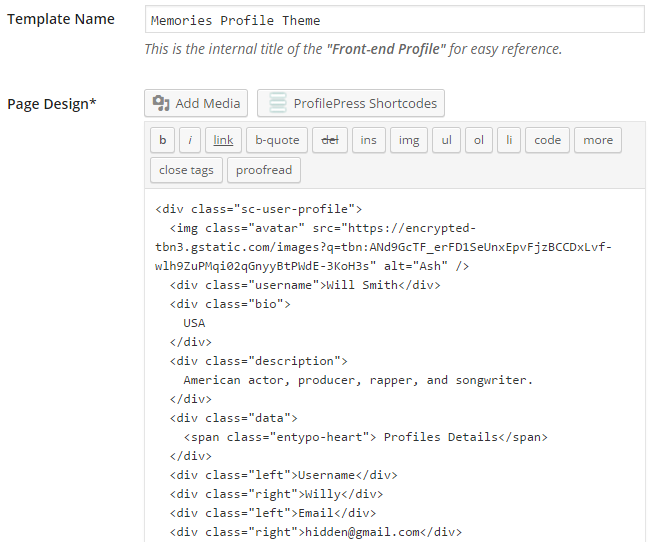
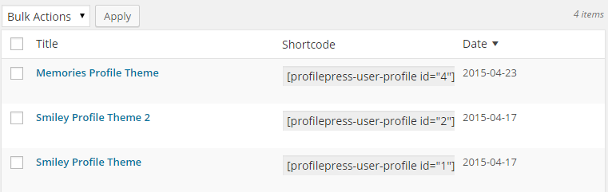

In this tutorial, we'll learn how to build a WordPress front-end user profile (card) with ProfilePress using the template below.
See the Pen User profile by Agbonghama Collins (@collizo4sky) on CodePen.
Before we go into the tutorial proper, it is worth noting how the front-end user profile works.
The URL to a user profile with username demo is accessible via http://your site.com/profile/demo.
If users are logged in to the site, accessing http://your site.com/profile/ will reveal their profile.
Click the Front-end Profile menu.
Click the Add New button.
Enter a name for the user profile card in Template Name field.
The HTML and CSS code for the password-reset form will go into the Page Design and CSS Stylesheet textareas respectively.


Click the Preview Design button to see how the form will look.

The profile component or data will have to be replaced by their ProfilePress shortcode equivalents
Below is the final revision of the Login form code.
<div class="sc-user-profile">
<img class="avatar" src="[user-avatar-url]" />
<div class="username">[profile-first-name] [profile-last-name ]</div>
<div class="bio">
[profile-cpf key="country"]
</div>
<div class="description">
[profile-bio]
</div>
<div class="data">
<span class="entypo-heart"> Profiles Details</span>
</div>
<div class="left">Username</div>
<div class="right">[profile-username]</div>
<div class="left">Email</div>
<div class="right">[profile-email]</div>
<div class="left">Gender</div>
<div class="right">[profile-cpf key="gender"]</div>
<div class="left">Website</div>
<div class="right">[profile-website]</div>
</div>
Replace the code earlier entered into the Page Design textarea with the revised code above.
Save and then click the Back to Catalog button.
Copy its shortcode, paste it to a WordPress page and publish.

Preview the page to see the profile card.
Be sure to let ProfilePress know about the page containing this profile shortcode if you wish to make it the default profile theme for your website users.
A live demo is available here.
Note: You'll have to log in to see it. Use demo as the username and password.
After logging in, click this link again.